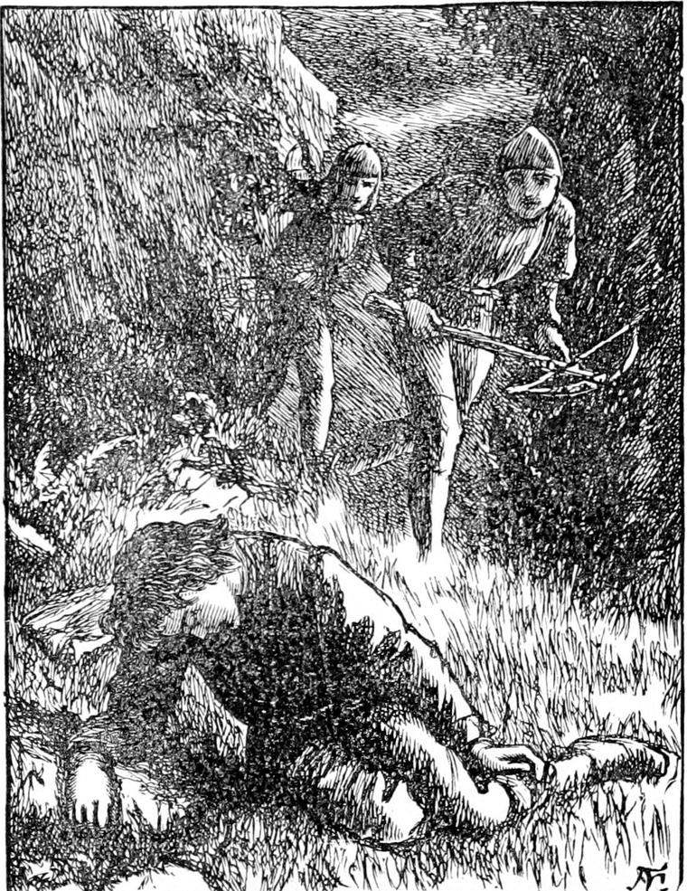

Everything was for some time quiet above ground. The king was still away in a distant part of his dominions. The men-at-arms kept watching about the house. They had been considerably astonished by finding at the foot of the rock in the garden the hideous body of the goblin creature killed by Curdie; but they came to the conclusion that it had been slain in the mines, and had crept out there to die; and except an occasional glimpse of a live one they saw nothing to cause alarm. Curdie kept watching in the mountain, and the goblins kept burrowing deeper into the earth. As long as they went deeper there was, Curdie judged, no immediate danger.
To Irene the summer was as full of pleasure as ever, and for a long time, although she often thought of her grandmother during the day, and often dreamed about her at night, she did not see her. The kids and the flowers were as much her delight as ever, and she made as much friendship with the miners' children she met on the mountain as Lootie would permit; but Lootie had very foolish notions concerning the dignity of a princess, not understanding that the truest princess is just the one who loves all her brothers and sisters best, and who is most able to do them good by being humble towards them. At the same time she was considerably altered for the better in her behaviour to the princess. She could not help seeing that she was no longer a mere child, but wiser than her age would account for. She kept foolishly whispering to the servants, however—sometimes that the princess was not right in her mind, sometimes that she was too good to live, and other nonsense of the same sort.
All this time Curdie had to be sorry, without a chance of confessing, that he had behaved so unkindly to the princess. This perhaps made him the more diligent in his endeavours to serve her. His mother and he often talked on the subject, and she comforted him, and told him she was sure he would some day have the opportunity he so much desired.
Here I should like to remark, for the sake of princes and princesses in general, that it is a low and contemptible thing to refuse to confess a fault, or even an error. If a true princess has done wrong, she is always uneasy until she has had an opportunity of throwing the wrongness away from her by saying: 'I did it; and I wish I had not; and I am sorry for having done it.' So you see there is some ground for supposing that Curdie was not a miner only, but a prince as well. Many such instances have been known in the world's history.
At length, however, he began to see signs of a change in the proceedings of the goblin excavators: they were going no deeper, but had commenced running on a level; and he watched them, therefore, more closely than ever. All at once, one night, coming to a slope of very hard rock, they began to ascend along the inclined plane of its surface. Having reached its top, they went again on a level for a night or two, after which they began to ascend once more, and kept on at a pretty steep angle. At length Curdie judged it time to transfer his observation to another quarter, and the next night he did not go to the mine at all; but, leaving his pickaxe and clue at home, and taking only his usual lumps of bread and pease pudding, went down the mountain to the king's house. He climbed over the wall, and remained in the garden the whole night, creeping on hands and knees from one spot to the other, and lying at full length with his ear to the ground, listening. But he heard nothing except the tread of the men-at-arms as they marched about, whose observation, as the night was cloudy and there was no moon, he had little difficulty in avoiding. For several following nights he continued to haunt the garden and listen, but with no success.
At length, early one evening, whether it was that he had got careless of his own safety, or that the growing moon had become strong enough to expose him, his watching came to a sudden end. He was creeping from behind the rock where the stream ran out, for he had been listening all round it in the hope it might convey to his ear some indication of the whereabouts of the goblin miners, when just as he came into the moonlight on the lawn, a whizz in his ear and a blow upon his leg startled him. He instantly squatted in the hope of eluding further notice. But when he heard the sound of running feet, he jumped up to take the chance of escape by flight. He fell, however, with a keen shoot of pain, for the bolt of a crossbow had wounded his leg, and the blood was now streaming from it. He was instantly laid hold of by two or three of the men-at-arms. It was useless to struggle, and he submitted in silence.

'It's a boy!' cried several of them together, in a tone of amazement. 'I thought it was one of those demons. What are you about here?'
'Going to have a little rough usage, apparently,' said Curdie, laughing, as the men shook him.
'Impertinence will do you no good. You have no business here in the king's grounds, and if you don't give a true account of yourself, you shall fare as a thief.'
'Why, what else could he be?' said one.
'He might have been after a lost kid, you know,' suggested another.
'I see no good in trying to excuse him. He has no business here, anyhow.'
'Let me go away, then, if you please,' said Curdie.
'But we don't please—not except you give a good account of yourself.'
'I don't feel quite sure whether I can trust you,' said Curdie.
'We are the king's own men-at-arms,' said the captain courteously, for he was taken with Curdie's appearance and courage.
'Well, I will tell you all about it—if you will promise to listen to me and not do anything rash.'
'I call that cool!' said one of the party, laughing. 'He will tell us what mischief he was about, if we promise to do as pleases him.'
'I was about no mischief,' said Curdie.
But ere he could say more he turned faint, and fell senseless on the grass. Then first they discovered that the bolt they had shot, taking him for one of the goblin creatures, had wounded him.
They carried him into the house and laid him down in the hall. The report spread that they had caught a robber, and the servants crowded in to see the villain. Amongst the rest came the nurse. The moment she saw him she exclaimed with indignation:
'I declare it's the same young rascal of a miner that was rude to me and the princess on the mountain. He actually wanted to kiss the princess. I took good care of that—the wretch! And he was prowling about, was he? Just like his impudence!' The princess being fast asleep, she could misrepresent at her pleasure.
When he heard this, the captain, although he had considerable doubt of its truth, resolved to keep Curdie a prisoner until they could search into the affair. So, after they had brought him round a little, and attended to his wound, which was rather a bad one, they laid him, still exhausted from the loss of blood, upon a mattress in a disused room—one of those already so often mentioned—and locked the door, and left him. He passed a troubled night, and in the morning they found him talking wildly. In the evening he came to himself, but felt very weak, and his leg was exceedingly painful. Wondering where he was, and seeing one of the men-at-arms in the room, he began to question him and soon recalled the events of the preceding night. As he was himself unable to watch any more, he told the soldier all he knew about the goblins, and begged him to tell his companions, and stir them up to watch with tenfold vigilance; but whether it was that he did not talk quite coherently, or that the whole thing appeared incredible, certainly the man concluded that Curdie was only raving still, and tried to coax him into holding his tongue. This, of course, annoyed Curdie dreadfully, who now felt in his turn what it was not to be believed, and the consequence was that his fever returned, and by the time when, at his persistent entreaties, the captain was called, there could be no doubt that he was raving. They did for him what they could, and promised everything he wanted, but with no intention of fulfilment. At last he went to sleep, and when at length his sleep grew profound and peaceful, they left him, locked the door again, and withdrew, intending to revisit him early in the morning.